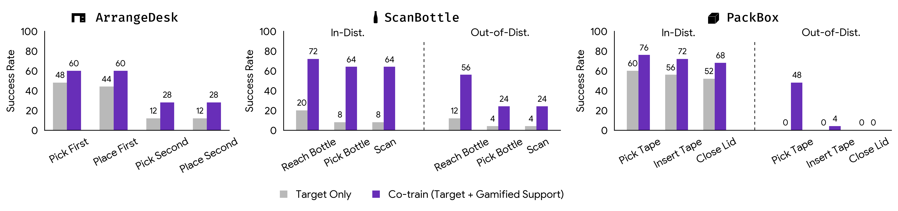

Imitation learning from human demonstrations has become a dominant approach for training autonomous robot policies. However, collecting demonstration datasets is costly: it often requires access to robots and needs sustained effort in a tedious, long process. These factors limit the scale of data available for training policies. We aim to address this scalability challenge by involving a broader audience in a gamified data collection experience that is both accessible and motivating. Specifically, we develop a gamified remote teleoperation platform, RoboCade, to engage general users in collecting data that is beneficial for downstream policy training. To do this, we embed gamification strategies into the design of system interface and data collection tasks. In the system interface, we include components such as visual feedback, sound effects, goal visualizations, progress bars, leaderboards, and badges. We additionally propose principles for constructing gamified tasks that have overlapping structure with useful downstream target tasks. We instantiate RoboCade on three manipulation tasks—including spatial arrangement, scanning, and insertion. To illustrate the viability of gamified robot data collection, we collect a demonstration dataset through our platform, and show that co-training robot policies with this data can improve success rate on non-gamified target tasks (+16-56%). Further, we conduct a user study to validate that novice users find the gamified platform significantly more enjoyable than a standard non-gamified platform (+24%). These results highlight the promise of gamified data collection as a scalable, accessible, and engaging method for collecting demonstration data.

User Study Subjective Results. We report user rankings for our RoboCade system compared to a non-gamified remote teleoperation interface. The GELLO controller is used in both conditions. Users tend to find the gamified interface more intuitive, enjoyable, and motivating. * indicates significance at p < 0.05 under a Wilcoxon signed-rank test.

Co-training with Gamified Data. For our 3 target tasks, we compare the performance of Diffusion Policy (Chi et al. 2023) when trained only on target task data (Target Only) versus co-trained with gamified support tasks (Co-train), with a fixed training budget. For each task and training condition, we perform 25 trials and report staged success rate (%). Co-training improves success rate on all 3 tasks for in-distribution conditions (In-Dist.). For ScanBottle and PackBox, we additionally evaluate on out-of-distribution initial configurations (Out-of-Dist.) and find that co-training improves generalization.


Select one of the target tasks and policy types below to view sample trajectories. We include both successes and failures.
@article{robocade2025,
title = {RoboCade: Gamifying Robot Data Collection},
author = {Suvir Mirchandani and Mia Tang and Jiafei Duan and Jubayer Ibn Hamid and Michael Cho and Dorsa Sadigh},
journal = {arXiv},
year = {2025},
}